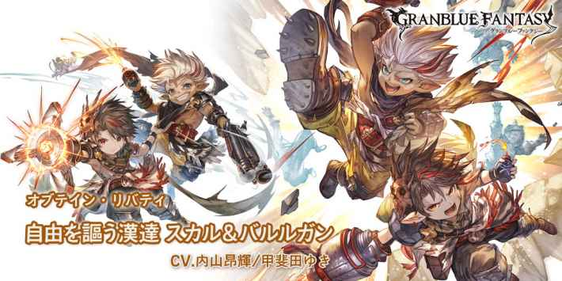

CD:9
自己無敵效果(2T)
自己逆境效果(40%~120%/8T)
•當自己瀕死時，追加不死身效果(1次/無法消除)
CD:5
賦予敵方以下隨機1個弱體效果
•暗闇效果(30%)，持續180秒
•毒(5000)，持續180秒
•水屬性攻擊-20%，持續180秒
•土屬性防禦-20%，持續180秒
•弱體耐性-20%，持續180秒
•特動傷害-20%(3T)
自己瀕死時，發動2次
CD:8
└攻擊+50%
自己瀕死時，普攻予傷+15%(3T/天司類加算)
スカル&バルルガン
基本資訊
| 定位 | 攻擊 |
| 得意武器 | 銃/格鬥 |
| 種族 | 哈比 |
| CV | 内山昂輝 甲斐田ゆき |
立繪
上限解放前||上限解放後奧義
| アーダル･ブラスト | |
| 土屬性4.5倍傷害 發動2技 |
主動技能
CD:9 |
クレイジースター |
| 消耗自己當前HP80% 自己無敵效果(2T) 自己逆境效果(40%~120%/8T) •當自己瀕死時，追加不死身效果(1次/無法消除) |
|
CD:5 |
ノーザンラッシュ |
| 敵方單體土屬性4倍傷害 賦予敵方以下隨機1個弱體效果 •暗闇效果(30%)，持續180秒 •毒(5000)，持續180秒 •水屬性攻擊-20%，持續180秒 •土屬性防禦-20%，持續180秒 •弱體耐性-20%，持續180秒 •特動傷害-20%(3T) 自己瀕死時，發動2次 |
|
CD:8 |
アーダル･バイト |
| 自己祆天之火效果(1T/無法消除) └攻擊+50% 自己瀕死時，普攻予傷+15%(3T/天司類加算) |
被動技能
 |
ビッグスター |
| 自己瀕死時獲得以下效果 •必TA •弱體免疫 •土屬性追擊(20%) •驅散免疫 |
|
|
それぞれの自由な生き方 |
| 敵方發動特動時，自己發動2技 敵方使用V2特動(黃色特動)時，自己所有技能CD-2 |